NZ Solutions Apps for Odoo
Chart of Accounts Cleanup & Restore — Odoo 18
Safely clean your chart of accounts with multi-step confirmation, detailed deletion logs, Excel export, and selective restore. The module tracks deleted, protected, referenced, and failed accounts so you always keep full audit visibility.
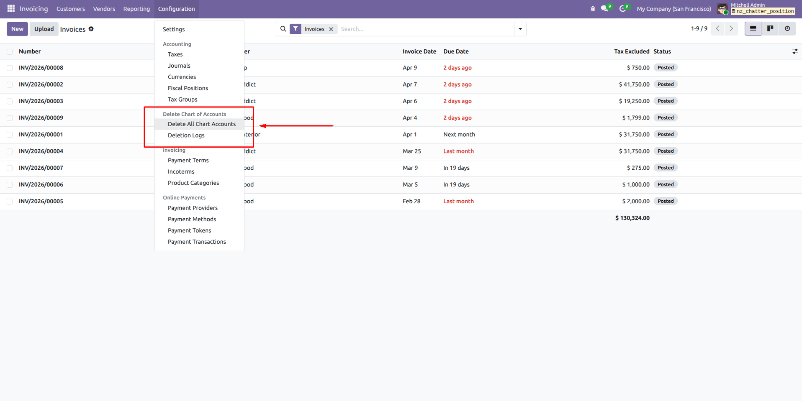
What does this module provide?
This module adds a controlled process to remove chart of accounts in Odoo with strong safeguards. Users must type confirmation text before deletion, can optionally force-delete protected accounts, and every run creates a detailed log with counters for deleted/protected/referenced/failed accounts. From each log, users can export the deleted accounts to Excel, mark lines for restore, restore selected accounts, and manage selection quickly with Select All / Unselect All buttons.
KEY HIGHLIGHTS
Multi-Step Deletion Safety
Deletion starts with a confirmation wizard and requires typing DELETE. Force-delete has an extra final warning step with CONFIRM DELETE.
Detailed Result Tracking
Each operation records totals for deleted, protected, referenced, and failed accounts so the result is always transparent.
Excel Export
Export deleted chart of accounts into an Odoo-style Excel file and keep it as backup for future recovery scenarios.
Selective Restore
Restore only selected deleted accounts from log lines, with duplicate checks and fallback create strategy.
Bulk Selection Tools
Use Select All / Unselect All on log lines to speed up restore preparation for large account sets.
Accounting Manager Restricted
Access is restricted to Accounting Managers for both cleanup and restoration operations.
1) Start Cleanup Action
From Chart of Accounts, click the cleanup action to open the deletion confirmation wizard.
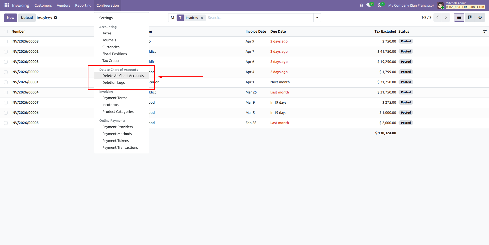
2) Type DELETE and Confirm
In the wizard, type DELETE and click the delete button to proceed with the normal protected-safe deletion flow.
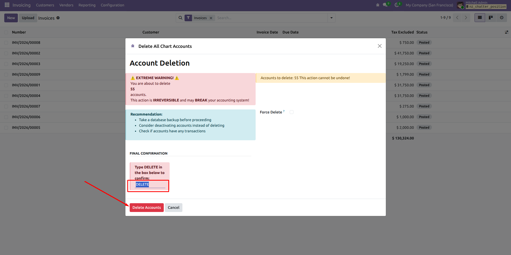
3) Deletion Result Summary
A result message appears showing how many accounts were deleted, protected, and failed during deletion.
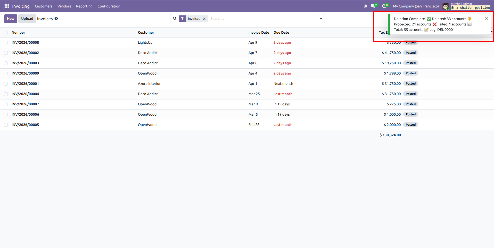
4) Open Deletion Logs Menu
Go to the dedicated Deletion Logs menu to review all cleanup operations.
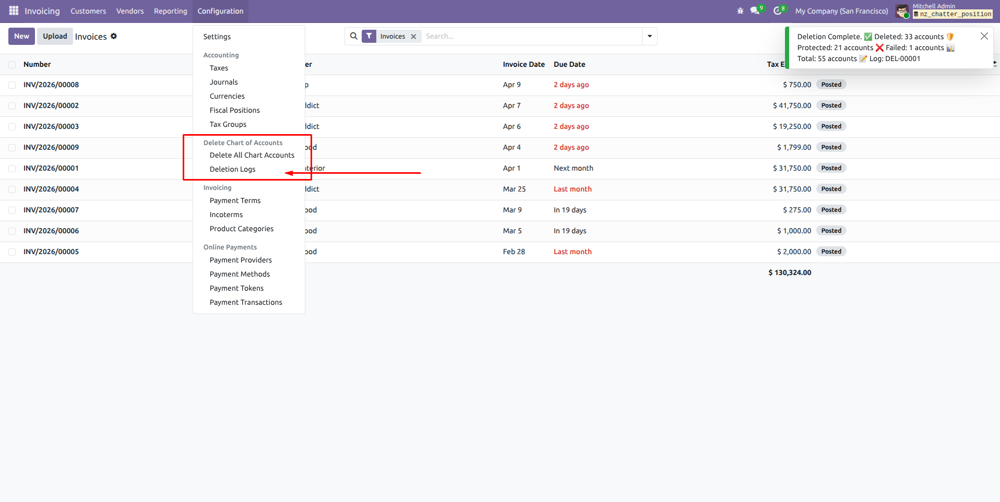
5) Log Form with Deleted Accounts
Open a log record to see full details and the deleted account lines available for restoration.
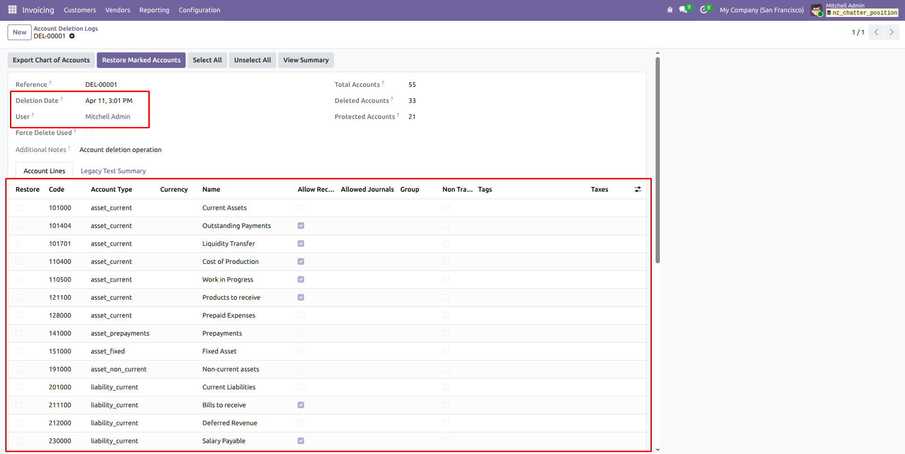
6) Export Excel Button
Use the Export Chart of Accounts button to download the deleted accounts in Excel format.
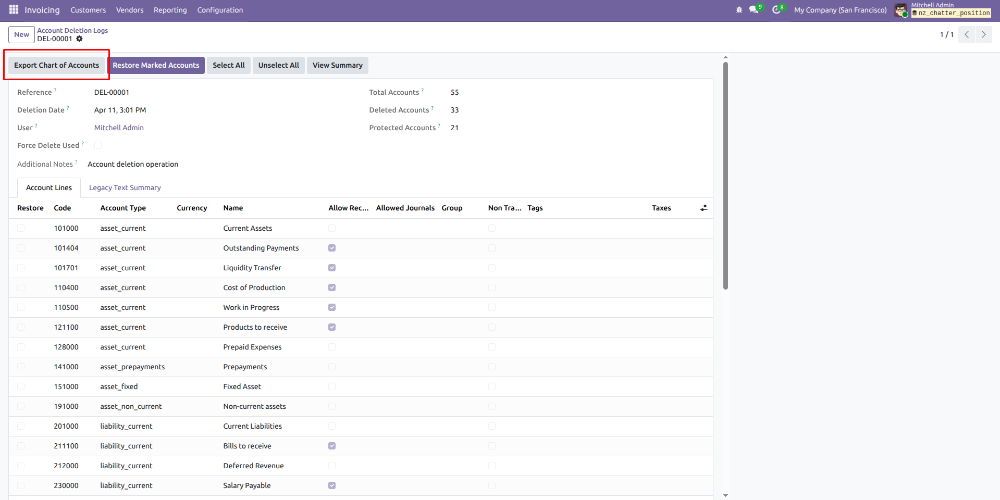
7) Exported Excel File
The exported sheet follows Odoo-style structure and can be archived for backup and recovery purposes.
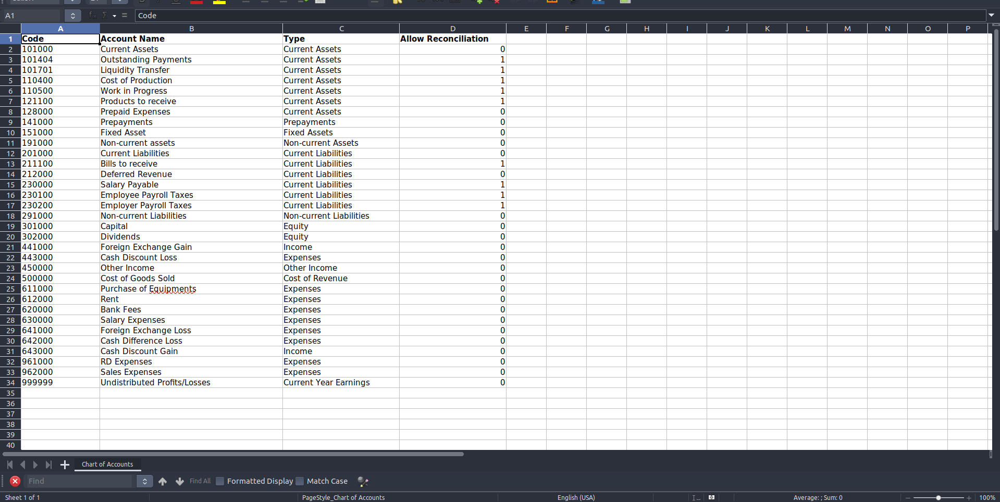
8) Select Lines for Restore
From account lines, choose records manually or use Select All / Unselect All shortcuts.
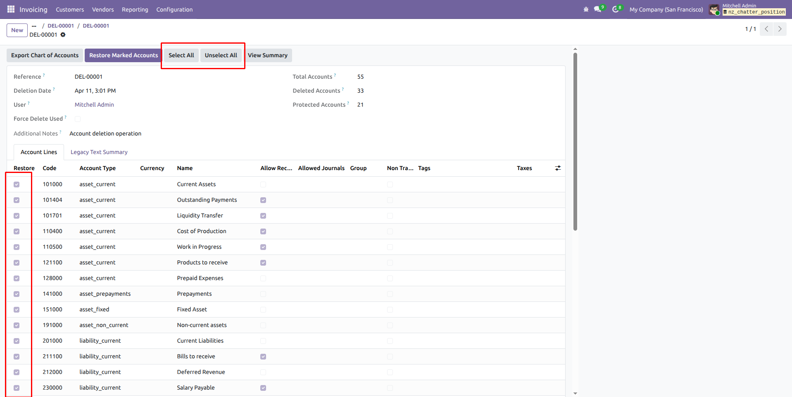
9) Restore Selected Accounts
After selecting accounts, click Restore Marked Accounts to bring them back to chart of accounts.
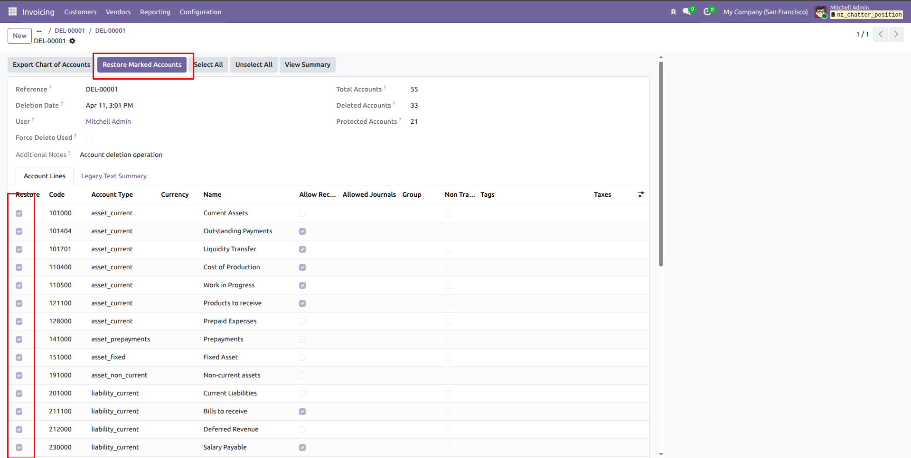
10) Restore Success Notification
A notification confirms restored/failed/skipped totals so you can verify the restore outcome instantly.
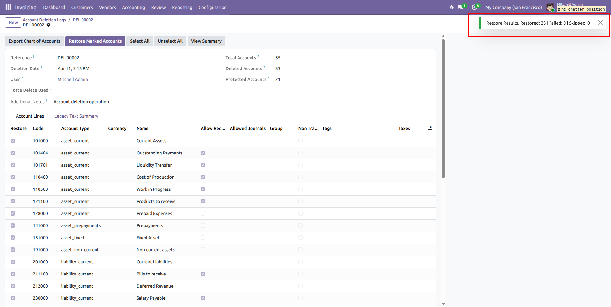
11) Open Deletion Popup Again
You can reopen the deletion popup at any time to start a new cleanup operation.
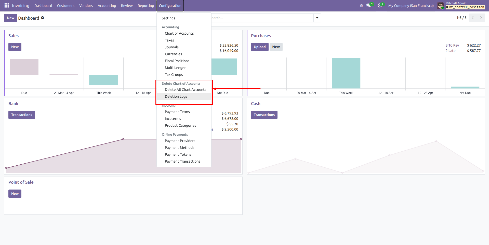
12) Enable Force Delete + Type DELETE
Activate force delete mode, type DELETE, and continue to the final safety confirmation step.
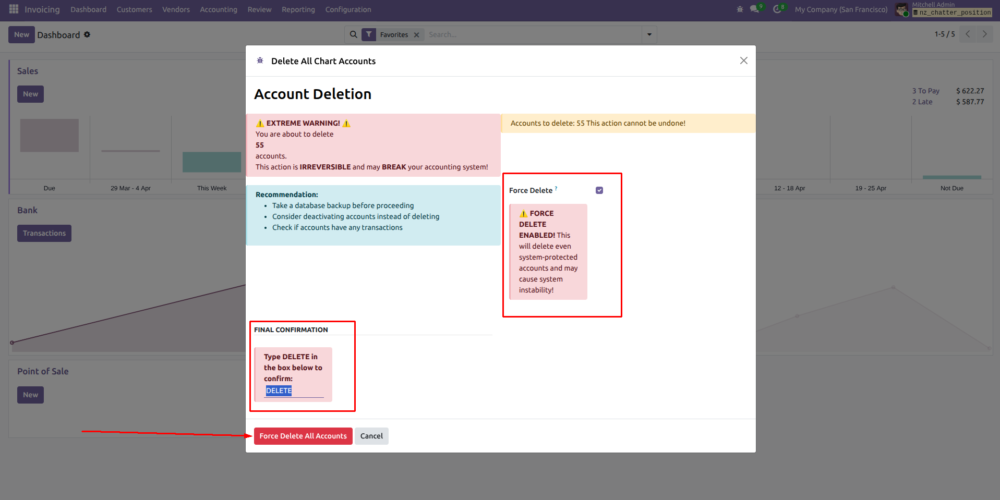
13) Final Warning Confirmation
The final warning wizard appears and requires CONFIRM DELETE before force deletion is executed.
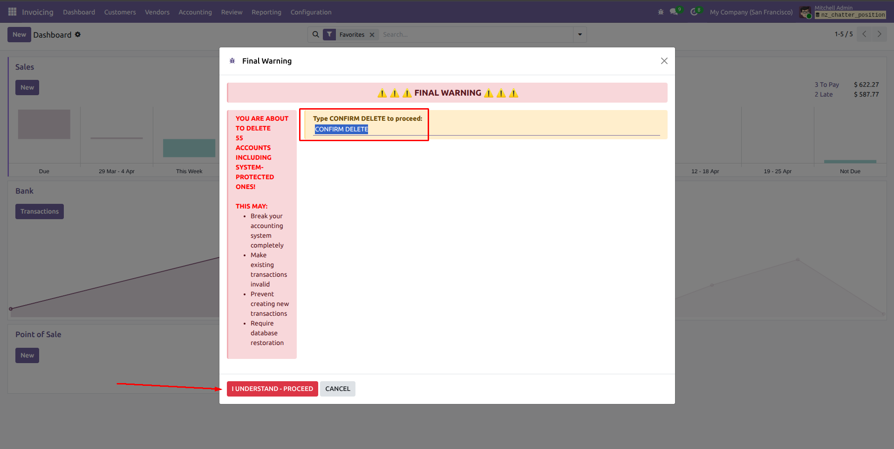
Who can run account cleanup?
Only users in the Accounting Manager group can run deletion and restore actions.
Can I delete protected accounts?
Yes, via Force Delete mode, but it requires an additional final confirmation step to reduce accidental damage.
What if some accounts cannot be deleted?
The process continues and logs protected, referenced, and failed accounts with reasons where possible.
How do I restore deleted accounts?
Open a deletion log, mark lines to restore, then click Restore Marked Accounts.
Can I export the deleted chart for backup?
Yes, use Export Chart of Accounts to download an Excel file from each log.
Does restore create duplicates?
No. The module checks if account code already exists and skips duplicates.
Can I restore all lines quickly?
Yes. Use Select All then Restore Marked Accounts.
Is this compatible with Odoo 18?
Yes, this release targets Odoo 18 Community and Enterprise.
Version 18.0.1.0.0
Initial Odoo 18 Release- Ported from Odoo 19 to Odoo 18
- Delete all chart of accounts with confirmation wizard
- Optional force-delete flow with final warning wizard
- Detailed deletion logs with account-level snapshots
- Excel export for deleted chart of accounts
- Selective restore with bulk select/unselect tools
- Compatibility fixes for Odoo 18 loading and views